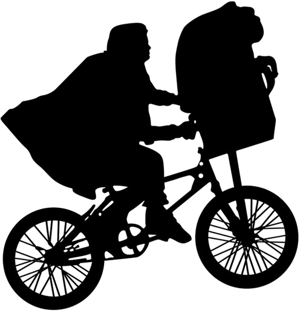
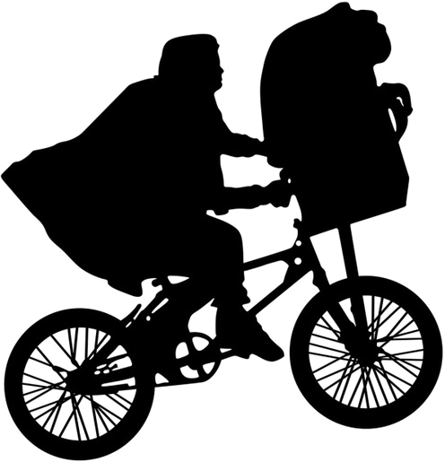

Tilbake til jorda!
>>>
 

Mange sier at jorda er rund, men det er fake news.
Du ser jo her klart og tydelig at den er flat!
Du ser jo her klart og tydelig at den er flat!
Vi må få folk rundt hele kloden til å forstå at jorda er flat som en tallerken!
Jorda ser kanskje rund ut nå, men det er bare en illusjon
Jorda ser kanskje rund ut nå, men det er bare en illusjon
Trykk på det spesielle teleskopet mitt, så kan du se selv!